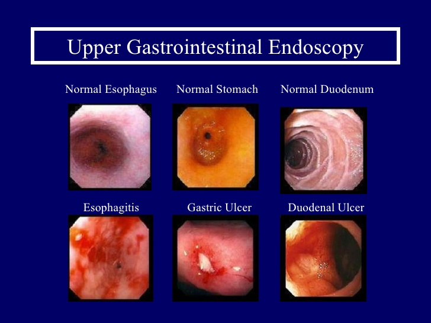

H-pylori is a Gram-negative microaerophillic bacterium.
H-pylori is found in the deep mucus layer.
H-pylori colonizes gastric mucosa.
Grows optimally at pH (6 to 7) ,but gastric mucosa has a strong buffering in spite of lower pH on the lumen side of stomach.
H-pylori also produces a protease that modifies the gastric mucus and further reduces the ability of acid through the mucus.
spread by oral-oral contact.
feco oral spread prominent.
causes mild to acute gastritis.
Gastric antrum causes gastric metaplasia.
Any part of the stomach can be involved.
Mechanism
Hypergastrinemia:-
Negative feedback loop for gastrin release is halted therefore, more acid is secreted.
Direct mucosal damage:-
Increased production of cytotoxins increases the production of ammonia, which may be toxic to epithelial cells within the gastric region.
Inflammatory response:-
Influx of macrophages and neutrophils trying to phagocytose the bacterial products or the bacteria themselves, directly due to cell-mediated response mechanisms.
Pathogenesis of NSAIDs
3 patterns of mucosal damage are caused by NSAIDs. These include superficial erosion & haemorrhages, silent ulcers detected by endoscopy & ulcers causing clinical symptoms & complications.
Cause gastric mucosal damage by two mechanisms:-
A direct or topical irritation of the gastric epithelim:
They are weak acids concentrated into mucosal cells , may produce acute superficial erosions.
Systemically:
Inhibition of (COX) and mediating adherence of leucocytes to mucosal cell .
Peptic ulcers: diagnosis and tests
Gastroscopy or endoscopy
Its sensitive .specific and safe method. The endoscope to take photographs of the ulcer area and biopsies.
These may then be tested for the presence of Helicobacter pylori (H. pylori), or examined to eliminate the possibility of cancer and uncommon lessions (crohns disease)
Clinical manifestation of pud
Heart burn, abdominal pain, nausea vomiting, gastritis, anemia, bad breath, constipation and diarrhea.
secondary, but less common symptoms
Anxiety
Depression
Fatigue or Low Energy
Headaches or Migraines
Skin Problems
Pre Menstrual Stress
Sinus Problems
Sleep Problems
Weight Problems(Gain or Loss)
Video:peptic ulcer
An upper gastrointestinal (GI) series Radiology

This is a series of X-rays of the stomach and duodenum that helps the doctor locate an ulcer and determine its type and how serious it is.
 +
+{kind=link}
{kind=link}
{kind=link}
{kind=link}
{kind=link}
{kind=link}
{kind=link}
{kind=link}
{kind=link}
{kind=link}
{kind=link}
{kind=link}
{kind=link}
{kind=link}